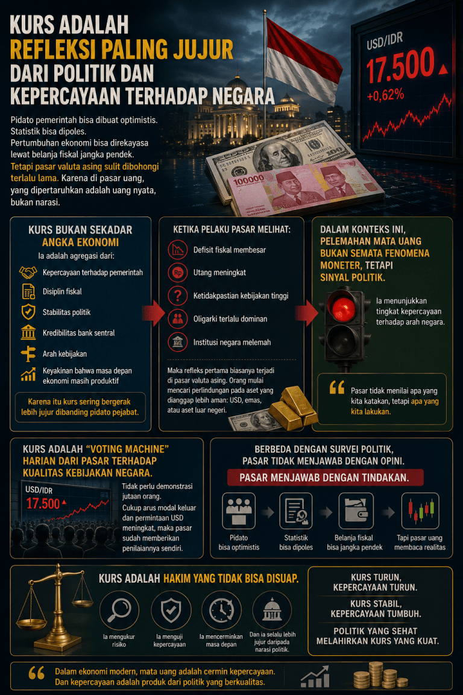

Angin malam kota Bandung berhembus membawa udara dingin yang menembus celah-celah jendela kaca di sebuah kafe bergaya industrialis di kawasan Dago Atas. Di salah satu sudut yang agak privat, diterangi lampu gantung berpendar kuning keemasan, empat orang sahabat lama duduk melingkari meja kayu jati tebal. Aroma kopi arabika bercampur dengan aroma pekat dari kertas-kertas laporan dan pendaran layar laptop yang menampilkan grafik-grafik fluktuasi pasar global.
Mereka berempat adalah lulusan Teknik Industri dari salah satu institut teknologi terbaik di kota ini. Dulu mereka terbiasa membedah sistem manufaktur, optimalisasi rantai pasok, dan rekayasa proses. Namun malam ini, yang mereka bedah adalah sesuatu yang jauh lebih makro dan berisiko tinggi: arsitektur ekonomi negara, kepercayaan publik, dan angka tukar mata uang yang sedang bergerak liar ibarat mesin anomali yang kehilangan kontrol.
Kalkulasi di Atas Meja Kayu
Dimas
"Kalian lihat layar Bloomberg hari ini? Angkanya menyentuh tujuh belas ribu lima ratus. Tujuh belas ribu lima ratus! Ini bukan sekadar angka di layar kaca, kawan. Bagi perusahaanku, ini adalah margin yang tergerus habis. Raw material kita enam puluh persen impor. Setiap kali Rupiah melemah sepuluh perak saja, aku harus menghitung ulang seluruh struktur harga dasar. Dan sekarang? Ini sudah seperti terjun bebas."
Dimas, yang kini memimpin sebuah perusahaan manufaktur komponen elektronik berteknologi tinggi, mengusap wajahnya yang tampak lelah. Kemeja linennya sedikit kusut. Di depannya, layar tablet menampilkan grafik tren naik USD/IDR yang ditandai dengan warna merah menyala, persis seperti lampu peringatan bahaya di lantai pabrik.
Bram
"Itulah yang selalu aku katakan, Dim. Pasar valuta asing itu sulit dibohongi terlalu lama. Kau bisa mendengarkan pidato pemerintah yang penuh optimisme setiap pagi. Kau bisa melihat rilis data statistik yang dipoles sedemikian rupa, dengan penyesuaian bobot inflasi atau redefinisi indikator pengangguran. Pertumbuhan ekonomi bisa direkayasa lewat belanja fiskal jangka pendek, subsidi langsung yang masif, atau proyek mercusuar. Tetapi di pasar uang, yang dipertaruhkan adalah uang nyata, bukan narasi. Real money, real skin in the game."
Bram menyesap espressonya perlahan. Pria yang kini menjabat sebagai direktur strategi kuantitatif di sebuah firma manajemen investasi multinasional ini memiliki pandangan yang selalu dingin dan analitis. Matanya tajam, terlatih untuk tidak pernah memercayai sentimen yang tidak didukung oleh fundamental kuantitatif.
Di sebelah Bram, duduk Nadia. Wanita ini tidak kalah briliannya. Setelah lulus dari Teknik Industri, ia melanjutkan studi ke jenjang doktoral di bidang kebijakan publik dan kini menjadi peneliti senior di sebuah lembaga think-tank ekonomi independen. Nadia dikenal dengan analisisnya yang tanpa kompromi, sering kali membuat para pejabat birokrasi merasa gerah saat membaca publikasinya.
Nadia
"Kurs itu bukan sekadar angka ekonomi, Dimas, Bram. Ia adalah agregasi dari banyak hal yang tak kasat mata namun sangat dirasakan. Kepercayaan terhadap pemerintah, disiplin fiskal, stabilitas politik, kredibilitas bank sentral, arah kebijakan, dan keyakinan bahwa masa depan ekonomi masih produktif. Karena itu, kurs sering kali bergerak jauh lebih jujur dibandingkan pidato pejabat manapun. Dalam konteks pelemahan yang kita lihat hari ini, ini bukan semata fenomena moneter. Ini adalah sinyal politik yang menyala merah."
Sinyal Merah dari Bilik Kekuasaan
Nadia membuka laptopnya, memutar layarnya agar ketiga sahabatnya bisa melihat sebuah dashboard data yang ia susun sendiri. Dasbor itu tidak hanya menampilkan indikator makroekonomi standar, tetapi juga indeks persepsi korupsi, konsentrasi kekayaan, dan metrik stabilitas institusional.
Nadia
"Mari kita bedah anatominya. Ketika pelaku pasar melihat defisit fiskal yang membesar tanpa underlying asset yang produktif, ketika utang meningkat tajam hanya untuk menutupi belanja operasional, dan ketidakpastian kebijakan berada pada level historis tertinggi... apa yang kalian harapkan? Apalagi dengan narasi bahwa oligarki terlalu dominan dalam penyusunan regulasi dan institusi negara yang melemah daya cengkeram penegakan hukumnya. Refleks pertama yang paling logis dan rasional dari pemilik modal adalah lari. Mencari perlindungan pada aset yang dianggap lebih aman: Dolar Amerika, emas, atau memindahkan aset ke luar negeri."
"Pasar tidak menilai apa yang kita katakan, tetapi apa yang kita lakukan. Mereka adalah hakim yang mengukur risiko setiap detiknya dengan satuan uang."
Reza, yang sejak tadi lebih banyak menyimak, akhirnya mencondongkan tubuhnya ke depan. Reza adalah satu-satunya dari mereka berempat yang memilih jalur akademis murni. Ia kini menjadi guru besar muda di almamater mereka, mengkhususkan diri pada pemodelan sistem kompleks dalam ekonomi makro. Kacamata berbingkai tipisnya memantulkan cahaya dari layar tablet Dimas.
Reza
"Penjelasan Nadia sangat relevan dengan kajian-kajian akademis paling mutakhir di tingkat global. Fenomena yang kita hadapi ini—dimana depresiasi mata uang merupakan cerminan dari erosi institusional—bukanlah hal baru dalam literatur ekonomi politik. Jika kita merujuk pada riset ekstensif dari Massachusetts Institute of Technology (MIT) Department of Economics, khususnya karya Daron Acemoglu dan James Robinson, ada korelasi yang sangat kuat antara kualitas institusi ekstraktif dengan volatilitas ekonomi makro."
Reza mulai menjelaskan dengan ritme yang teratur, khas seorang dosen yang sedang membawakan materi kuliah tingkat lanjut. Suaranya tenang namun penuh otoritas akademik.
Kajian Akademis Terapan: Institusi, Fiskal, dan Moneter
Dalam analisis ekonomi modern tingkat dunia, pergerakan nilai tukar tidak lagi dipandang secara sempit melalui lensa paritas daya beli (Purchasing Power Parity) atau diferensial suku bunga semata. Kajian dari Harvard Kennedy School mengenai ekonomi politik makroekonomi menunjukkan bahwa kredibilitas institusi adalah jangkar (anchor) dari nilai tukar.
Lebih jauh, Working Paper dari National Bureau of Economic Research (NBER) yang ditulis oleh Carmen Reinhart dan Kenneth Rogoff secara konsisten memperingatkan bahwa ketika defisit fiskal menembus ambang batas psikologis dan struktural pasar, dan utang publik digunakan bukan untuk belanja modal melainkan untuk political survival atau subsidi populis, maka pasar obligasi dan pasar valuta asing akan menghukum negara tersebut dengan risk premium yang eksponensial.
Selain itu, London School of Economics (LSE) Systemic Risk Centre dalam publikasi terbarunya menyoroti fenomena Fiscal Dominance—suatu kondisi di mana Bank Sentral kehilangan independensinya dan terpaksa mengakomodasi kebijakan fiskal yang ugal-ugalan. Saat pasar mencium aroma Fiscal Dominance ini, kredibilitas bank sentral runtuh, dan mata uang domestik akan mengalami aksi jual massal yang tidak bisa dihentikan hanya dengan intervensi cadangan devisa biasa.
Voting Machine Harian
Bram mengangguk setuju dengan penjelasan Reza. Ia menyilangkan tangannya, matanya menerawang ke luar jendela, menatap kerlip lampu kota Bandung yang membentang di bawah sana, tampak seperti lautan kunang-kunang yang rapuh.
Bram
"Tepat sekali, Za. Di pasar finansial, kita sering mengibaratkan kurs sebagai Voting Machine harian dari pasar terhadap kualitas kebijakan negara. Berbeda dengan survei politik yang bisa dipesan, atau jajak pendapat yang metodologinya bisa diarahkan, pasar tidak menjawab dengan opini. Pasar menjawab dengan tindakan. Dengan kapital."
Bram membuka sebuah aplikasi trading premium di ponselnya, menunjukkan peta panas (heatmap) aliran modal global.
Bram
"Tidak perlu demonstrasi jutaan orang turun ke jalan untuk menunjukkan bahwa sebuah kebijakan ekonomi itu salah. Cukup arus modal portofolio yang keluar, capital outflow yang masif, dan permintaan terhadap USD yang meningkat tajam dari korporasi untuk hedging maupun impor. Maka pasar sudah memberikan penilaiannya sendiri. Pidato bisa optimis, statistik inflasi bisa direkayasa agar terlihat rendah, belanja fiskal bisa diinjeksi untuk jangka pendek jelang pemilu, tapi pasar uang selalu membaca realitas dengan kejam."
Dimas memijat pelipisnya. Beban sebagai praktisi industri riil sangat berat ketika berhadapan dengan makroekonomi yang tak bersahabat.
Dimas
"Lalu apa solusi pragmatisnya? Bank Sentral sudah menaikkan suku bunga acuan beberapa kali. Cadangan devisa kita juga terus digelontorkan untuk stabilisasi rupiah. Mengapa efeknya seolah hanya sementara? Seperti menggarami lautan."
Nadia mengambil alih pembicaraan. Suaranya terdengar lebih tegas sekarang.
Nadia
"Karena menaikkan suku bunga dan intervensi pasar itu ibarat memberikan obat penurun panas pada pasien yang sebenarnya menderita infeksi paru-paru kronis, Dim. Panasnya mungkin turun sesaat, tapi infeksinya terus menyebar. Selama akar masalahnya—yaitu disiplin fiskal yang longgar, dominasi oligarki dalam proyek-proyek negara yang inefisien, dan pelemahan supremasi hukum—tidak diselesaikan, maka kepercayaan tidak akan pulih."
Hakim yang Tidak Bisa Disuap
Reza menambahkan perspektif dari studi terbarunya mengenai dinamika sistem (system dynamics) dalam ketahanan ekonomi nasional.
Reza
"Kurs adalah hakim yang tidak bisa disuap. Ia mengukur risiko dengan presisi matematis. Ia menguji kepercayaan melalui setiap transaksi yang terjadi di seluruh dunia. Ia mencerminkan proyeksi masa depan, dan ia selalu lebih jujur daripada narasi politik manapun. Sebuah studi dari Brookings Institution menegaskan bahwa di negara berkembang, nilai tukar mata uang adalah cermin paling jernih dari kredibilitas institusi."
Reza mengeluarkan selembar kertas dan mulai menggambar diagram kausalitas sederhana, ciri khas seorang insinyur sistem.
Reza
"Lihat putaran umpan balik (feedback loop) ini. Kebijakan yang populis meningkatkan beban utang. Beban utang yang tidak produktif menekan kapasitas fiskal. Kapasitas fiskal yang sempit memaksa negara mencari pendanaan eksternal atau mencetak uang secara terselubung. Pasar mendeteksi ini, ekspektasi inflasi naik, premi risiko negara (sovereign risk premium) melonjak. Hasil akhirnya? Kurs anjlok. Kurs turun, kepercayaan turun. Sebaliknya, saat kurs stabil tanpa manipulasi artifisial, kepercayaan tumbuh. Karena politik yang sehat, pada akhirnya, melahirkan kurs yang kuat."
Melangkah di Atas Ketidakpastian
Malam semakin larut. Kafe perlahan mulai sepi, menyisakan alunan musik jazz pelan dari pengeras suara di sudut ruangan. Keempat sahabat itu terdiam sejenak, meresapi beratnya realitas yang baru saja mereka diskusikan. Dimas menarik napas panjang, menutup layar tabletnya.
Dimas
"Jadi, kesimpulannya, bagi pelaku industri riil sepertiku, aku tidak bisa lagi sekadar mengandalkan proyeksi optimis dari dokumen negara. Aku harus melakukan lindung nilai (hedging) secara agresif, merekayasa ulang rantai pasokku agar lebih banyak menyerap komponen lokal meski butuh investasi R&D awal yang besar, dan menyiapkan skenario terburuk jika defisit fiskal ini benar-benar memicu krisis likuiditas."
Bram
"Itu langkah yang paling rasional, Dim. Di dunia manajemen risiko kuantitatif, kami punya prinsip: Hope is not a strategy. Berharap pemerintah tiba-tiba menjadi rasional dan efisien semalam suntuk adalah perjudian yang terlalu mahal. Lindungi cash flow-mu. Dalam ekonomi modern, mata uang adalah cermin kepercayaan. Dan kepercayaan adalah produk dari politik yang berkualitas. Selama politiknya masih penuh kompromi gelap, kita harus menyiapkan pelampung sendiri."
Nadia tersenyum tipis, merapikan dokumen-dokumennya dan memasukkannya ke dalam tas kulitnya.
Nadia
"Dan tugasku, dan mungkin tugas Reza juga di ranah akademik, adalah terus mengingatkan mereka yang berada di atas sana. Bahwa mereka tidak bisa selamanya menari di atas statistik yang dipoles. Karena pada akhirnya, pasar memiliki caranya sendiri untuk menyeimbangkan neraca kebohongan."
Pertemuan malam itu di Dago tidak menghasilkan solusi instan untuk negara. Namun, bagi empat pemikir dari latar belakang teknik industri yang kini tersebar di berbagai sektor strategis, diskusi tersebut adalah jangkar kewarasan mereka. Mereka memahami satu kebenaran absolut yang tak terbantahkan: hukum ekonomi memiliki gravitasi yang tidak bisa dilawan dengan retorika.
Ketika mereka berjalan keluar menuju area parkir yang diselimuti kabut tipis khas Bandung, ponsel Bram bergetar. Sebuah notifikasi peringatan dari terminal Bloomberg miliknya: indeks Dolar kembali menguat secara global seiring dengan rilis data ketenagakerjaan Amerika yang solid, menambah tekanan baru pada mata uang negara berkembang.
Bram menunjukkannya pada Dimas, Nadia, dan Reza. Mereka hanya saling bertatapan, tersenyum kecut, lalu melangkah menuju kendaraan masing-masing. Besok adalah hari baru di medan perang ekonomi, dan sang hakim—pasar valuta asing—akan kembali membuka sidangnya tepat pada pukul delapan pagi, tanpa peduli pada siapa pun yang mencoba menyuapnya dengan janji-janji kosong.
"Dalam ekonomi modern, mata uang adalah cermin kepercayaan.
Dan kepercayaan adalah produk dari politik yang berkualitas."